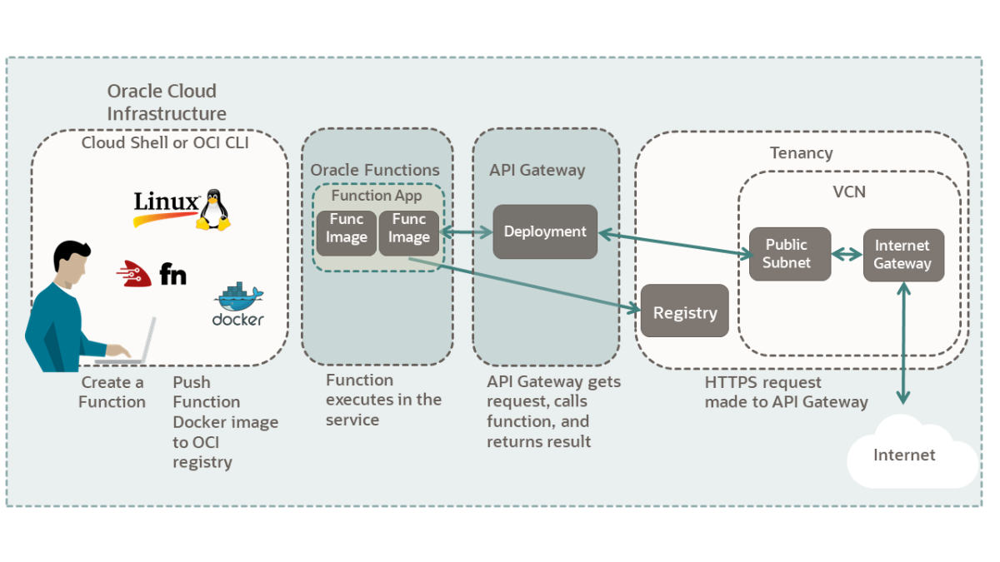

<div class="initial-content">
  <div id="main" role="main">

  <article class="page has-sidebar" itemscope itemtype="https://schema.org/CreativeWork">
    <meta itemprop="headline" content="Call a Function using API Gateway">
    
    <meta itemprop="datePublished" content="2021-11-20T12:01:00+00:00">
    


    <header>
      <h1 id="page-title" class="page__title" itemprop="headline">Call a Function using API Gateway
</h1>
      


    </header>

    <section class="page__content" itemprop="text">
      

        <p>In this tutorial, you’ll use Oracle Functions to process data passed from an Oracle API Gateway. Then, you’ll create a Python function that uses the runtime context to extract HTTP information passed in a request.</p>

<p>Key tasks include how to:</p>

<ul>
  <li>Gather required information.</li>
  <li>Create an application for your function.</li>
  <li>Create a “Hello World!” function.</li>
  <li>Convert your function to process runtime context data.</li>
  <li>Deploy and test your function.</li>
  <li>Create an API Gateway for your function</li>
  <li>Call your function from the internet using your API Gateway.</li>
</ul>

<figure class="">
              <picture>
                  <source srcset="assets/call-a-func-oracle-funcs-api-gtw-diagram.png 1x" />
                  
              </picture>
              <figcaption>Cloud diagram</figcaption>
            </figure>

<p>For additional information, see:</p>

<ul>
  <li><a href="https://signup.cloud.oracle.com/?language=en&amp;sourceType=:ow:de:te::::RC_WWMK211116P00260:DotBuildGetStarted&amp;intcmp=:ow:de:te::::RC_WWMK211116P00260:DotBuildGetStarted">Start for Free</a></li>
  <li><a href="https://docs.oracle.com/iaas/Content/API/Concepts/cliconcepts.htm">Command Line Interface (CLI)</a></li>
  <li><a href="https://docs.oracle.com/iaas/Content/Functions/Concepts/functionsoverview.htm">Oracle Functions</a></li>
  <li><a href="https://docs.oracle.com/iaas/Content/APIGateway/Concepts/apigatewayoverview.htm">Oracle API Gateway</a></li>
</ul>

<h2 id="before-you-begin">Before You Begin</h2>

<p>To successfully perform this tutorial, you will need to meet:</p>

<h3 id="oci-account-requirements">OCI Account Requirements</h3>

<ul>
  <li>A <strong>paid</strong> Oracle Cloud Infrastructure account. See <a href="https://docs.oracle.com/iaas/Content/GSG/Tasks/signingup.htm">Signing Up for Oracle Cloud Infrastructure</a>.</li>
  <li>Your OCI account configured to support Oracle Functions development.<br />
See: <a href="https://www.oracle.com/webfolder/technetwork/tutorials/infographics/oci_functions_cloudshell_quickview/functions_quickview_top/functions_quickview/index.html#">Oracle Functions on Cloud Shell Quick Start</a></li>
  <li>Completed of one of the two Oracle Functions introduction tutorials.
    <ul>
      <li><a href="https://docs.oracle.com/iaas/developer-tutorials/tutorials/functions/func-setup-cs/01-summary.htm#setup-functions-dev-cs">Functions: Get Started using Cloud Shell</a></li>
      <li><a href="https://docs.oracle.com/iaas/developer-tutorials/tutorials/functions/func-setup-cli/01-summary.htm#setup-functions-dev">Functions: Get Started using the CLI</a></li>
    </ul>

    <p>After completing either one of these two tutorials:</p>
    <ul>
      <li>Oracle Functions is set up and configured to create applications and deploy functions.</li>
      <li>Oracle Registry is set up to store function images.</li>
      <li>Docker is logged into the Oracle Registry.</li>
      <li>The required VCN and resources needed for Oracle Functions.</li>
      <li>An API key pair and an auth token.</li>
    </ul>
  </li>
</ul>

<h3 id="software-requirements">Software Requirements</h3>

<h4 id="oracle-cli">Oracle CLI</h4>

<ul>
  <li>Python 3.6+ and pip3.</li>
  <li><strong>Docker Engine:</strong> A Linux computer or Linux VM. See <a href="https://docs.docker.com/engine/install/">Docker engine requirements</a> for versions, and distros supported.</li>
  <li><strong>Docker Desktop:</strong> Available for MacOS or Windows 10.
    <ul>
      <li>Windows 10: Windows 10 update 2004 with WSL 2 and Ubuntu or other distro installed (See: <a href="https://docs.microsoft.com/en-us/windows/wsl/install-win10">Windows Subsystem for Linux Installation Guide for Windows 10</a>).
        <ul>
          <li>
            <p><a href="https://docs.docker.com/docker-for-windows/install/">Install Docker Desktop for Windows 10.</a></p>

            <blockquote class="notice">
              <p><strong>Note:</strong> Docker includes special Linux support for WSL 2 on Windows 10 update 2004.</p>
            </blockquote>
          </li>
        </ul>
      </li>
      <li>MacOS: See <a href="https://docs.docker.com/docker-for-mac/install/">Install Docker Desktop for MacOS.</a></li>
    </ul>
  </li>
</ul>

<h4 id="oracle-cloud-shell">Oracle Cloud Shell</h4>

<p>If you use Cloud Shell, the preceding list of software is already installed.</p>

<h2 id="gather-required-information">Gather required information</h2>

<p>In order to be able to complete the tutorial, we’ll start by collecting some crucial bits of information. We recommend copying the  following information into your notepad.</p>

<h3 id="get-compartment-information">Get compartment information</h3>

<p>First, we’ll need to <a href="https://docs.oracle.com/iaas/Content/Identity/Tasks/managingcompartments.htm#To">create a compartment</a>. Once your compartment is created, save the compartment’s <code class="language-plaintext highlighter-rouge">OCID</code> and <code class="language-plaintext highlighter-rouge">name</code>.</p>

<p>To get the compartment <code class="language-plaintext highlighter-rouge">OCID</code> from an existing compartment:</p>

<ol>
  <li>Open the navigation menu and select <strong>Identity &amp; Security</strong>.<br />
Under <strong>Identity</strong>, select <strong>Compartments</strong>.</li>
  <li>Select your compartment.</li>
  <li>Select the <strong>Copy</strong> link for the <em>OCID</em> field.</li>
  <li>Save the compartment OCID and name.</li>
</ol>

<h3 id="additional-information">Additional information</h3>

<p>Ensure you have the following information collected for the tutorial:</p>

<ul>
  <li>
    <p><strong>Compartment Name: <code class="language-plaintext highlighter-rouge">&lt;your-compartment-name&gt;</code></strong></p>

    <p>Example: <code class="language-plaintext highlighter-rouge">my-compartment</code></p>
  </li>
  <li>
    <p><strong>Compartment ID: <code class="language-plaintext highlighter-rouge">&lt;compartment-OCID&gt;</code></strong></p>

    <p>Example: <code class="language-plaintext highlighter-rouge">ocid1.compartment.oc1.aaaaaaa...</code></p>
  </li>
  <li>
    <p><strong>VCN Name:</strong> <code class="language-plaintext highlighter-rouge">&lt;your-vcn-name&gt;</code></p>

    <p>Example: <code class="language-plaintext highlighter-rouge">my-vcn</code></p>

    <ol>
      <li>Open the navigation menu and select <strong>Networking</strong>.</li>
      <li>Select <strong>Virtual Cloud Networks</strong>.<br />
From the list of networks, select your VCN.</li>
    </ol>
  </li>
  <li>
    <p><strong>VCN Public Subnet Name:</strong> <code class="language-plaintext highlighter-rouge">&lt;Public-Subnet-your-vcn-name&gt;</code></p>

    <p>Example: <code class="language-plaintext highlighter-rouge">Public-Subnet-my-vcn</code></p>

    <ol>
      <li>Open the navigation menu and select <strong>Networking</strong></li>
      <li>Select <strong>Virtual Cloud Networks</strong>.<br />
From the list of networks, select your VCN.</li>
    </ol>
  </li>
</ul>

<h2 id="perform-required-configuration">Perform required configuration</h2>

<p>Here, you’ll configure everything you need for the tutorial.</p>

<h3 id="create-a-functions-application">Create a Functions Application</h3>

<p>To create the application:</p>

<ol>
  <li>Open the navigation menu and select <strong>Developer Services</strong>.<br />
Under <strong>Functions</strong>, select <strong>Applications</strong>.</li>
  <li>Select your compartment from the <strong>Compartment</strong> drop-down.</li>
  <li>Select <strong>Create Application</strong>.</li>
  <li>Fill in the form data:
    <ul>
      <li><strong>Name:</strong> <code class="language-plaintext highlighter-rouge">&lt;your-app-name&gt;</code></li>
      <li><strong>VCN:</strong> <code class="language-plaintext highlighter-rouge">&lt;your-vcn-name&gt;</code></li>
      <li><strong>Subnets:</strong> <code class="language-plaintext highlighter-rouge">&lt;Public-Subnet-your-vcn-name&gt;</code></li>
    </ul>
  </li>
  <li>Select <strong>Create</strong>.</li>
</ol>

<p>Your app is created.</p>

<h3 id="setup-ingress-rule-for-https">Setup Ingress Rule for HTTPS</h3>

<ol>
  <li>Open the navigation menu and select <strong>Networking</strong>.</li>
  <li>Select <strong>Virtual Cloud Networks</strong>.</li>
  <li>Select the name of the VCN you used to for your <em>Oracle Functions</em> application.</li>
  <li>
    <p>With your new VCN displayed, select your <strong>Public</strong> subnet link.</p>

    <blockquote class="notice">
      <p><strong>Note:</strong> The public subnet information is displayed with the <em>Security Lists</em> at the bottom of the page.</p>
    </blockquote>
  </li>
  <li>
    <p>Select the <strong>Default Security List</strong> link or appropriate security list link.</p>

    <p>The default <strong>Ingress Rules</strong> for your VCN are displayed.</p>
  </li>
  <li>
    <p>Select <strong>Add Ingress Rules</strong>.</p>

    <p>An <strong>Add Ingress Rules</strong> dialog is displayed.</p>
  </li>
  <li>
    <p>Fill in the ingress rule with the following information:</p>

    <ul>
      <li><strong>Stateless:</strong> Checked</li>
      <li><strong>Source Type:</strong> CIDR</li>
      <li><strong>Source CIDR:</strong> 0.0.0.0/0</li>
      <li><strong>IP Protocol:</strong> TCP</li>
      <li><strong>Source port range:</strong> (leave-blank)</li>
      <li><strong>Destination Port Range:</strong> 443</li>
      <li><strong>Description:</strong> VCN for applications</li>
    </ul>
  </li>
  <li>After all the data is entered, select <strong>Add Ingress Rules</strong>.
    <blockquote class="notice">
      <p><strong>Note:</strong> Once you select Add Ingress Rule, HTTPS connections are allowed to your <strong>public subnet</strong>.</p>
    </blockquote>
  </li>
</ol>

<h3 id="set-up-a-policy-for-api-gateway-access-to-functions">Set up a policy for API Gateway access to functions</h3>

<p>In this section, we’ll set up a policy which allows the API Gateway to invoke functions.</p>

<h4 id="create-a-dynamic-group-for-the-api-gateway">Create a Dynamic Group for the API Gateway</h4>

<ol>
  <li>Open the navigation menu and select <strong>Identity &amp; Security</strong>.<br />
Under <strong>Identity</strong>, select <strong>Dynamic Groups</strong>.</li>
  <li>Select <strong>Create Dynamic Group</strong>.</li>
  <li>Fill in the following information to define your dynamic group:
    <ul>
      <li><strong>Name:</strong> <code class="language-plaintext highlighter-rouge">&lt;name-for-your-dynamic-group&gt;</code></li>
      <li>Under <strong>Matching Rules</strong>, use <strong>Rule 1:</strong> <code class="language-plaintext highlighter-rouge">&lt;the-rule-text&gt;</code></li>
    </ul>

    <p>Here is the sample name and the rule you need to fill out.</p>

    <ul>
      <li><strong>Name:</strong> <code class="language-plaintext highlighter-rouge">api-gtw-func-dynamic-group</code></li>
      <li>Under <strong>Matching Rules</strong> use <strong>Rule 1:</strong> <code class="language-plaintext highlighter-rouge">ALL {resource.type = 'ApiGateway', resource.compartment.id = 'ocid1.compartment.&lt;your-compartment-OCID&gt;'}</code></li>
    </ul>
  </li>
  <li>Select <strong>Create</strong>.</li>
</ol>

<h4 id="create-the-policy-for-api-gateway">Create the policy for API Gateway</h4>

<ol>
  <li>Open the navigation menu and select <strong>Identity &amp; Security</strong>.<br />
Under <strong>Identity</strong>, select <strong>Policies</strong>.</li>
  <li>Select <strong>Create Policy</strong>.</li>
  <li>To define your policy, fill in the following information:
    <ul>
      <li><strong>Name:</strong> <code class="language-plaintext highlighter-rouge">&lt;name-for-your-policy&gt;</code></li>
      <li><strong>Description:</strong> <code class="language-plaintext highlighter-rouge">&lt;description-for policy&gt;</code></li>
      <li><strong>Compartment:</strong> <code class="language-plaintext highlighter-rouge">&lt;name-of-functions-compartment&gt;</code>
        <blockquote class="notice">
          <p><strong>Note:</strong> This last parameter is the compartment <strong><code class="language-plaintext highlighter-rouge">name</code></strong>, <em>not</em> the compartment <code class="language-plaintext highlighter-rouge">OCID</code>.</p>
        </blockquote>
      </li>
    </ul>

    <p>For the <strong>Policy Builder Section</strong>:</p>

    <ul>
      <li>Select the <strong>Customize (Advanced)</strong> link.</li>
      <li>
        <p>Enter your policy in the text box.</p>

        <p>For example:</p>

        <div class="language-console highlighter-rouge"><div class="highlight"><pre class="highlight"><code><span class="gp">  Allow dynamic-group  api-gtw-func-dynamic-group to use functions-family in compartment &lt;your-compartment-name&gt;</span><span class="w">
</span></code></pre></div>        </div>
      </li>
    </ul>
  </li>
  <li>Select <strong>Create</strong>.</li>
</ol>

<p>You’ve now created a policy to allow API Gateway to use Functions.</p>

<h3 id="create-hello-world-python-function">Create “Hello World” Python function</h3>

<p>In this section, we’ll explore a simple, practical application.</p>

<ol>
  <li>Open a terminal.</li>
  <li>
    <p>Create a directory to store your functions and navigate into that directory.</p>

    <div class="language-console highlighter-rouge"><div class="highlight"><pre class="highlight"><code><span class="go">   mkdir my-dir-name
   cd my-dir-name
</span></code></pre></div>    </div>
  </li>
  <li>
    <p>Create a Python “Hello World” function with Fn:</p>

    <div class="language-console highlighter-rouge"><div class="highlight"><pre class="highlight"><code><span class="go">   fn init --runtime python my-func-name
</span></code></pre></div>    </div>

    <p>This command creates a directory called <em><code class="language-plaintext highlighter-rouge">my-func-name</code></em> containing both the function and its associated configuration files within it.</p>
  </li>
  <li>Navigate into the <em><code class="language-plaintext highlighter-rouge">my-func-name</code></em> directory.</li>
  <li>
    <p>Deploy the function, by running:</p>

    <div class="language-console highlighter-rouge"><div class="highlight"><pre class="highlight"><code><span class="go">   fn -v deploy --app your-app-name
</span></code></pre></div>    </div>

    <p>Various messages are displayed as the Docker images are built, pushed to OCIR, and eventually deployed to Oracle Functions.</p>
  </li>
  <li>
    <p>Invoke the function, by running:</p>

    <div class="language-console highlighter-rouge"><div class="highlight"><pre class="highlight"><code><span class="go">   fn invoke your-app-name my-func-name
</span></code></pre></div>    </div>

    <p>This returns: <code class="language-plaintext highlighter-rouge">{"message": "Hello World"}</code></p>
  </li>
  <li>
    <p>Invoke the function with a parameter, by running:</p>

    <div class="language-console highlighter-rouge"><div class="highlight"><pre class="highlight"><code><span class="go">   echo -n '{"name":"Bob"}' | fn invoke your-app-name my-func-name
</span></code></pre></div>    </div>

    <p>This echoes: <code class="language-plaintext highlighter-rouge">{"message": "Hello Bob"}</code></p>
  </li>
</ol>

<h2 id="create-an-api-gateway">Create an API Gateway</h2>

<p>To call your function, create an API Gateway.</p>

<h3 id="create-the-api-gateway">Create the API Gateway</h3>

<ol>
  <li>Open the navigation menu and select <strong>Developer Services</strong>.<br />
Under <strong>API Management</strong>, select <strong>Gateways</strong>.</li>
  <li>Select your compartment from the <strong>Compartment</strong> drop-down.</li>
  <li>Select <strong>Create Gateway</strong>.</li>
  <li>Fill in the following information to define your API Gateway:
    <ul>
      <li><strong>Name:</strong> <code class="language-plaintext highlighter-rouge">&lt;your-gateway-name&gt;</code></li>
      <li><strong>Type:</strong> <code class="language-plaintext highlighter-rouge">&lt;Public&gt;</code></li>
      <li><strong>Compartment:</strong> <code class="language-plaintext highlighter-rouge">&lt;your-compartment-name&gt;</code></li>
      <li><strong>Virtual Cloud Network in <code class="language-plaintext highlighter-rouge">&lt;your-vcn-name&gt;:</code></strong> <code class="language-plaintext highlighter-rouge">&lt;select-your-vcn&gt;</code></li>
      <li><strong>Subnet in <code class="language-plaintext highlighter-rouge">&lt;your-compartment-name&gt;:</code></strong> <code class="language-plaintext highlighter-rouge">&lt;your-public-subnet-name&gt;</code></li>
    </ul>
  </li>
  <li>Select <strong>Create</strong>.<br />
Wait a few minutes for your API Gateway to be created.</li>
</ol>

<h3 id="create-an-api-deployment-for-your-gateway">Create an API Deployment for your Gateway</h3>

<ol>
  <li>Select <strong>Deployments</strong> in the <strong>Resources</strong> section on the left-hand side of the screen.</li>
  <li>Select <strong>Create Deployment</strong>.</li>
  <li>Ensure that <strong>From Scratch</strong> is selected for the <em>deployment</em> type.</li>
  <li>To define your deployment, fill in the <strong>Basic Information</strong> section:
    <ul>
      <li><strong>Name:</strong> <code class="language-plaintext highlighter-rouge">&lt;your-deployment-name&gt;</code></li>
      <li><strong>Path Prefix (example):</strong> <code class="language-plaintext highlighter-rouge">/v1</code></li>
      <li><strong>Compartment:</strong> <code class="language-plaintext highlighter-rouge">&lt;your-compartment-name&gt;</code></li>
      <li><strong>API Request Policies:</strong> Take default values</li>
      <li><strong>API Logging Policies:</strong> Take default value of <strong>Information</strong></li>
    </ul>
  </li>
  <li>Select <strong>Next</strong>.<br />
The <strong>Routes</strong> dialog appears with <strong>Route 1</strong> selected.</li>
  <li>To define your route, fill in the <strong>Route 1</strong> section:
    <ul>
      <li><strong>Path:</strong> <code class="language-plaintext highlighter-rouge">&lt;your-route-path&gt;</code>
  Example: /http-info</li>
      <li><strong>Methods:</strong> GET POST</li>
      <li><strong>Type:</strong> Oracle Functions</li>
      <li><strong>Application in <code class="language-plaintext highlighter-rouge">&lt;your-compartment-name&gt;</code>:</strong> Select the Functions application you created.</li>
      <li><strong>Function Name:</strong> Select the function you created in the configuration section.</li>
    </ul>
  </li>
  <li>Select <strong>Next</strong>.<br />
The <strong>Review</strong> dialog is displayed summarizing the choices you have made.</li>
  <li>Select <strong>Create</strong>.<br />
Your deployment is created.</li>
  <li>Select the <strong>Deployments</strong> link for your gateway.</li>
  <li>
    <p>Copy the base endpoint for the deployment you created.</p>

    <p>For example: <code class="language-plaintext highlighter-rouge">https://aaaaa.apigateway.us-ashburn-X.oci.customer-oic.com/v1</code></p>
  </li>
</ol>

<h3 id="test-your-api-gateway">Test your API Gateway</h3>

<p>With your API Gateway and deployment created, we’re ready to test your installation. We can do this by creating a simple script with the <code class="language-plaintext highlighter-rouge">curl</code> command.</p>

<p>To create the URL for <code class="language-plaintext highlighter-rouge">curl</code>, add your deployment path to your endpoint.</p>

<ol>
  <li>Create the script file: <code class="language-plaintext highlighter-rouge">touch gtw01.sh &amp;&amp; chmod 755 gtw01.sh</code></li>
  <li>
    <p>Add the curl command to the script file:</p>

    <div class="language-bash highlighter-rouge"><div class="highlight"><pre class="highlight"><code>   <span class="c">#!/bin/bash</span>
   curl &lt;your-api-gateway-endpoint&gt;/http-info
</code></pre></div>    </div>

    <p>The command returns: <code class="language-plaintext highlighter-rouge">{"message":"Hello World"}</code></p>
  </li>
</ol>

<p>You’ve now connected your API Gateway to a boilerplate Python function! Next, you’ll update your Python function to display information passed in an HTTP request.</p>

<h2 id="update-function-to-access-http-and-function-data">Update Function to Access HTTP and Function Data</h2>

<p>Here, we’ll modify the boilerplate Python function to access the runtime context and display HTTP information.</p>

<h3 id="review-starting-python-code">Review Starting Python Code</h3>

<p>If we look at the boilerplate function, the Python function looks something like this:</p>

<div class="language-python highlighter-rouge"><div class="highlight"><pre class="highlight"><code><span class="kn">import</span> <span class="nn">io</span>
<span class="kn">import</span> <span class="nn">json</span>
<span class="kn">import</span> <span class="nn">logging</span>

<span class="kn">from</span> <span class="nn">fdk</span> <span class="kn">import</span> <span class="n">response</span>


<span class="k">def</span> <span class="nf">handler</span><span class="p">(</span><span class="n">ctx</span><span class="p">,</span> <span class="n">data</span><span class="p">:</span> <span class="n">io</span><span class="p">.</span><span class="n">BytesIO</span> <span class="o">=</span> <span class="bp">None</span><span class="p">):</span>
    <span class="n">name</span> <span class="o">=</span> <span class="s">"World"</span>
    <span class="k">try</span><span class="p">:</span>
        <span class="n">body</span> <span class="o">=</span> <span class="n">json</span><span class="p">.</span><span class="n">loads</span><span class="p">(</span><span class="n">data</span><span class="p">.</span><span class="n">getvalue</span><span class="p">())</span>
        <span class="n">name</span> <span class="o">=</span> <span class="n">body</span><span class="p">.</span><span class="n">get</span><span class="p">(</span><span class="s">"name"</span><span class="p">)</span>
    <span class="k">except</span> <span class="p">(</span><span class="nb">Exception</span><span class="p">,</span> <span class="nb">ValueError</span><span class="p">)</span> <span class="k">as</span> <span class="n">ex</span><span class="p">:</span>
        <span class="n">logging</span><span class="p">.</span><span class="n">getLogger</span><span class="p">().</span><span class="n">info</span><span class="p">(</span><span class="s">'error parsing json payload: '</span> <span class="o">+</span> <span class="nb">str</span><span class="p">(</span><span class="n">ex</span><span class="p">))</span>
    
    <span class="n">logging</span><span class="p">.</span><span class="n">getLogger</span><span class="p">().</span><span class="n">info</span><span class="p">(</span><span class="s">"Inside Python Hello World function"</span><span class="p">)</span>
    <span class="k">return</span> <span class="n">response</span><span class="p">.</span><span class="n">Response</span><span class="p">(</span>
       <span class="n">ctx</span><span class="p">,</span> <span class="n">response_data</span><span class="o">=</span><span class="n">json</span><span class="p">.</span><span class="n">dumps</span><span class="p">(</span>
           <span class="p">{</span><span class="s">"message"</span><span class="p">:</span> <span class="s">"Hello {0}"</span><span class="p">.</span><span class="nb">format</span><span class="p">(</span><span class="n">name</span><span class="p">)}),</span>
       <span class="n">headers</span><span class="o">=</span><span class="p">{</span><span class="s">"Content-Type"</span><span class="p">:</span> <span class="s">"application/json"</span><span class="p">}</span>
    <span class="p">)</span>
</code></pre></div></div>

<p>Using this code as a starting point, the sections that follow convert this function into a Python function that returns HTTP and configuration data.</p>

<h3 id="update-required-packages">Update Required Packages</h3>

<p>First, update the function for each of the required packages.</p>

<ol>
  <li>
    <p><strong>OCI -</strong> Update the <code class="language-plaintext highlighter-rouge">requirements.txt</code> file for the <code class="language-plaintext highlighter-rouge">oci</code> package:</p>

    <div class="language-console highlighter-rouge"><div class="highlight"><pre class="highlight"><code><span class="go">   fdk
   oci 
</span></code></pre></div>    </div>
  </li>
  <li>
    <p><strong>HTTP -</strong> Update the <code class="language-plaintext highlighter-rouge">import</code> statements in <code class="language-plaintext highlighter-rouge">func.py</code> for packages required to support the HTTP features:</p>

    <div class="language-python highlighter-rouge"><div class="highlight"><pre class="highlight"><code>   <span class="kn">import</span> <span class="nn">io</span>
   <span class="kn">import</span> <span class="nn">json</span>
   <span class="kn">import</span> <span class="nn">oci</span>
   <span class="kn">import</span> <span class="nn">logging</span>
   <span class="kn">from</span> <span class="nn">urllib.parse</span> <span class="kn">import</span> <span class="n">urlparse</span><span class="p">,</span> <span class="n">parse_qs</span>
</code></pre></div>    </div>

    <ul>
      <li>The <code class="language-plaintext highlighter-rouge">oci</code> package is required for some of the context requests.</li>
      <li>The <code class="language-plaintext highlighter-rouge">urlparse, parse_qs</code> packages are used for parsing.</li>
    </ul>
  </li>
</ol>

<h3 id="add-http-request-information">Add HTTP Request Information</h3>

<ol>
  <li>
    <p>Remove the main body of the function.<br />
We’ll add the <code class="language-plaintext highlighter-rouge">response</code> method and its related code as we go.</p>

    <div class="language-python highlighter-rouge"><div class="highlight"><pre class="highlight"><code>   <span class="kn">import</span> <span class="nn">io</span>
   <span class="kn">import</span> <span class="nn">json</span>
   <span class="kn">import</span> <span class="nn">oci</span>
   <span class="kn">import</span> <span class="nn">logging</span>
   <span class="kn">from</span> <span class="nn">urllib.parse</span> <span class="kn">import</span> <span class="n">urlparse</span><span class="p">,</span> <span class="n">parse_qs</span>  
                      
   <span class="kn">from</span> <span class="nn">fdk</span> <span class="kn">import</span> <span class="n">response</span>

   <span class="k">def</span> <span class="nf">handler</span><span class="p">(</span><span class="n">ctx</span><span class="p">,</span> <span class="n">data</span><span class="p">:</span> <span class="n">io</span><span class="p">.</span><span class="n">BytesIO</span> <span class="o">=</span> <span class="bp">None</span><span class="p">):</span> 
</code></pre></div>    </div>
  </li>
  <li>
    <p>Add code to display HTTP information in the response.<br />
Here is the code with explanatory comments following:</p>

    <div class="language-python highlighter-rouge"><div class="highlight"><pre class="highlight"><code>   <span class="kn">import</span> <span class="nn">io</span>
   <span class="kn">import</span> <span class="nn">json</span>
   <span class="kn">import</span> <span class="nn">oci</span>
   <span class="kn">import</span> <span class="nn">logging</span>
   <span class="kn">from</span> <span class="nn">urllib.parse</span> <span class="kn">import</span> <span class="n">urlparse</span><span class="p">,</span> <span class="n">parse_qs</span>  
                      
   <span class="kn">from</span> <span class="nn">fdk</span> <span class="kn">import</span> <span class="n">response</span>

   <span class="k">def</span> <span class="nf">handler</span><span class="p">(</span><span class="n">ctx</span><span class="p">,</span> <span class="n">data</span><span class="p">:</span> <span class="n">io</span><span class="p">.</span><span class="n">BytesIO</span> <span class="o">=</span> <span class="bp">None</span><span class="p">):</span>
       <span class="n">logging</span><span class="p">.</span><span class="n">getLogger</span><span class="p">().</span><span class="n">info</span><span class="p">(</span><span class="s">"HTTP function start"</span><span class="p">)</span>
          
       <span class="n">resp</span> <span class="o">=</span> <span class="p">{}</span>
          
       <span class="c1"># retrieving the request headers
</span>       <span class="n">headers</span> <span class="o">=</span> <span class="n">ctx</span><span class="p">.</span><span class="n">Headers</span><span class="p">()</span>
       <span class="n">logging</span><span class="p">.</span><span class="n">getLogger</span><span class="p">().</span><span class="n">info</span><span class="p">(</span><span class="s">"Headers: "</span> <span class="o">+</span> <span class="n">json</span><span class="p">.</span><span class="n">dumps</span><span class="p">(</span><span class="n">headers</span><span class="p">))</span>
       <span class="n">resp</span><span class="p">[</span><span class="s">"Headers"</span><span class="p">]</span> <span class="o">=</span> <span class="n">headers</span>
          
       <span class="c1"># retrieving the request body, e.g. {"key1":"value"}
</span>       <span class="k">try</span><span class="p">:</span>
           <span class="n">requestbody_str</span> <span class="o">=</span> <span class="n">data</span><span class="p">.</span><span class="n">getvalue</span><span class="p">().</span><span class="n">decode</span><span class="p">(</span><span class="s">'UTF-8'</span><span class="p">)</span>
           <span class="k">if</span> <span class="n">requestbody_str</span><span class="p">:</span>
               <span class="n">resp</span><span class="p">[</span><span class="s">"Request body"</span><span class="p">]</span> <span class="o">=</span> <span class="n">json</span><span class="p">.</span><span class="n">loads</span><span class="p">(</span><span class="n">requestbody_str</span><span class="p">)</span>
           <span class="k">else</span><span class="p">:</span>
               <span class="n">resp</span><span class="p">[</span><span class="s">"Request body"</span><span class="p">]</span> <span class="o">=</span> <span class="p">{}</span>
       <span class="k">except</span> <span class="nb">Exception</span> <span class="k">as</span> <span class="n">ex</span><span class="p">:</span>
           <span class="k">print</span><span class="p">(</span><span class="s">'ERROR: The request body is not JSON'</span><span class="p">,</span> <span class="n">ex</span><span class="p">,</span> <span class="n">flush</span><span class="o">=</span><span class="bp">True</span><span class="p">)</span>
           <span class="k">raise</span>
          
       <span class="c1"># retrieving the request URL, e.g. "/v1/http-info"
</span>       <span class="n">requesturl</span> <span class="o">=</span> <span class="n">ctx</span><span class="p">.</span><span class="n">RequestURL</span><span class="p">()</span>
       <span class="n">logging</span><span class="p">.</span><span class="n">getLogger</span><span class="p">().</span><span class="n">info</span><span class="p">(</span><span class="s">"Request URL: "</span> <span class="o">+</span> <span class="n">json</span><span class="p">.</span><span class="n">dumps</span><span class="p">(</span><span class="n">requesturl</span><span class="p">))</span>
       <span class="n">resp</span><span class="p">[</span><span class="s">"Request URL"</span><span class="p">]</span> <span class="o">=</span> <span class="n">requesturl</span>
          
       <span class="c1"># retrieving query string from the request URL, e.g. {"param1":["value"]}
</span>       <span class="n">parsed_url</span> <span class="o">=</span> <span class="n">urlparse</span><span class="p">(</span><span class="n">requesturl</span><span class="p">)</span>
       <span class="n">resp</span><span class="p">[</span><span class="s">"Query String"</span><span class="p">]</span> <span class="o">=</span> <span class="n">parse_qs</span><span class="p">(</span><span class="n">parsed_url</span><span class="p">.</span><span class="n">query</span><span class="p">)</span>
       <span class="n">logging</span><span class="p">.</span><span class="n">getLogger</span><span class="p">().</span><span class="n">info</span><span class="p">(</span><span class="s">"Query string: "</span> <span class="o">+</span> <span class="n">json</span><span class="p">.</span><span class="n">dumps</span><span class="p">(</span><span class="n">resp</span><span class="p">[</span><span class="s">"Query String"</span><span class="p">]))</span>
          
       <span class="c1"># retrieving the request method, e.g. "POST", "GET"...
</span>       <span class="n">method</span> <span class="o">=</span> <span class="n">ctx</span><span class="p">.</span><span class="n">Method</span><span class="p">()</span>
       <span class="k">if</span> <span class="n">method</span><span class="p">:</span>
           <span class="n">logging</span><span class="p">.</span><span class="n">getLogger</span><span class="p">().</span><span class="n">info</span><span class="p">(</span><span class="s">"Request Method: "</span> <span class="o">+</span> <span class="n">method</span><span class="p">)</span>
       <span class="n">resp</span><span class="p">[</span><span class="s">"Request Method"</span><span class="p">]</span> <span class="o">=</span> <span class="n">method</span>
       <span class="k">else</span><span class="p">:</span>
           <span class="n">logging</span><span class="p">.</span><span class="n">getLogger</span><span class="p">().</span><span class="n">info</span><span class="p">(</span><span class="s">"No Request Method"</span><span class="p">)</span>
           <span class="n">resp</span><span class="p">[</span><span class="s">"Request Method"</span><span class="p">]</span> <span class="o">=</span> <span class="bp">None</span>
</code></pre></div>    </div>

    <p><strong>Comments:</strong></p>
    <ul>
      <li>The <code class="language-plaintext highlighter-rouge">handler</code> function receives system information about the current request through the <code class="language-plaintext highlighter-rouge">ctx</code> and <code class="language-plaintext highlighter-rouge">data</code> parameters.</li>
      <li>All the data is added to the <code class="language-plaintext highlighter-rouge">resp</code> dictionary which is eventually returned in the response.</li>
      <li>Notice that the function runtime context (<code class="language-plaintext highlighter-rouge">ctx</code>) contains much of the HTTP data passed from a request including: headers, request URL, and method.</li>
      <li>The <code class="language-plaintext highlighter-rouge">data</code> parameter returns the body of the request.</li>
    </ul>
  </li>
</ol>

<h3 id="add-the-function-related-data-to-the-response">Add the Function-related Data to the Response</h3>

<p>Next, we’ll retrieve Oracle Functions’ related data from the context and then return a response. Comments describing the code follow afterwards.</p>

<div class="language-python highlighter-rouge"><div class="highlight"><pre class="highlight"><code><span class="c1"># retrieving the function configuration
</span><span class="n">resp</span><span class="p">[</span><span class="s">"Configuration"</span><span class="p">]</span> <span class="o">=</span> <span class="nb">dict</span><span class="p">(</span><span class="n">ctx</span><span class="p">.</span><span class="n">Config</span><span class="p">())</span>
<span class="n">logging</span><span class="p">.</span><span class="n">getLogger</span><span class="p">().</span><span class="n">info</span><span class="p">(</span><span class="s">"Configuration: "</span> <span class="o">+</span> <span class="n">json</span><span class="p">.</span><span class="n">dumps</span><span class="p">(</span><span class="n">resp</span><span class="p">[</span><span class="s">"Configuration"</span><span class="p">]))</span>

<span class="c1"># retrieving the Application ID, e.g. "ocid1.fnapp.oc1.phx.aaaaxxxx"
</span><span class="n">appid</span> <span class="o">=</span> <span class="n">ctx</span><span class="p">.</span><span class="n">AppID</span><span class="p">()</span>
<span class="n">logging</span><span class="p">.</span><span class="n">getLogger</span><span class="p">().</span><span class="n">info</span><span class="p">(</span><span class="s">"AppID: "</span> <span class="o">+</span> <span class="n">appid</span><span class="p">)</span>
<span class="n">resp</span><span class="p">[</span><span class="s">"AppID"</span><span class="p">]</span> <span class="o">=</span> <span class="n">appid</span>

<span class="c1"># retrieving the Function ID, e.g. "ocid1.fnfunc.oc1.phx.aaaaxxxxx"
</span><span class="n">fnid</span> <span class="o">=</span> <span class="n">ctx</span><span class="p">.</span><span class="n">FnID</span><span class="p">()</span>
<span class="n">logging</span><span class="p">.</span><span class="n">getLogger</span><span class="p">().</span><span class="n">info</span><span class="p">(</span><span class="s">"FnID: "</span> <span class="o">+</span> <span class="n">fnid</span><span class="p">)</span>
<span class="n">resp</span><span class="p">[</span><span class="s">"FnID"</span><span class="p">]</span> <span class="o">=</span> <span class="n">fnid</span>

<span class="c1"># retrieving the Function call ID, e.g. "01E9FE6JBW1BT0C68ZJ003KR1Q"
</span><span class="n">callid</span> <span class="o">=</span> <span class="n">ctx</span><span class="p">.</span><span class="n">CallID</span><span class="p">()</span>
<span class="n">logging</span><span class="p">.</span><span class="n">getLogger</span><span class="p">().</span><span class="n">info</span><span class="p">(</span><span class="s">"CallID: "</span> <span class="o">+</span> <span class="n">callid</span><span class="p">)</span>
<span class="n">resp</span><span class="p">[</span><span class="s">"CallID"</span><span class="p">]</span> <span class="o">=</span> <span class="n">callid</span>

<span class="c1"># retrieving the Function format, e.g. "http-stream"
</span><span class="n">fnformat</span> <span class="o">=</span> <span class="n">ctx</span><span class="p">.</span><span class="n">Format</span><span class="p">()</span>
<span class="n">logging</span><span class="p">.</span><span class="n">getLogger</span><span class="p">().</span><span class="n">info</span><span class="p">(</span><span class="s">"Format: "</span> <span class="o">+</span> <span class="n">fnformat</span><span class="p">)</span>
<span class="n">resp</span><span class="p">[</span><span class="s">"Format"</span><span class="p">]</span> <span class="o">=</span> <span class="n">fnformat</span>

<span class="c1"># retrieving the Function deadline, e.g. "2020-05-29T05:24:46Z"
</span><span class="n">deadline</span> <span class="o">=</span> <span class="n">ctx</span><span class="p">.</span><span class="n">Deadline</span><span class="p">()</span>
<span class="n">logging</span><span class="p">.</span><span class="n">getLogger</span><span class="p">().</span><span class="n">info</span><span class="p">(</span><span class="s">"Deadline: "</span> <span class="o">+</span> <span class="n">deadline</span><span class="p">)</span>
<span class="n">resp</span><span class="p">[</span><span class="s">"Deadline"</span><span class="p">]</span> <span class="o">=</span> <span class="n">deadline</span>

<span class="n">logging</span><span class="p">.</span><span class="n">getLogger</span><span class="p">().</span><span class="n">info</span><span class="p">(</span><span class="s">"function handler end"</span><span class="p">)</span>
<span class="k">return</span> <span class="n">response</span><span class="p">.</span><span class="n">Response</span><span class="p">(</span>
    <span class="n">ctx</span><span class="p">,</span> 
    <span class="n">response_data</span><span class="o">=</span><span class="n">json</span><span class="p">.</span><span class="n">dumps</span><span class="p">(</span><span class="n">resp</span><span class="p">),</span>
    <span class="n">headers</span><span class="o">=</span><span class="p">{</span><span class="s">"Content-Type"</span><span class="p">:</span> <span class="s">"application/json"</span><span class="p">}</span>
<span class="p">)</span>
</code></pre></div></div>

<p><strong>Comments:</strong><br />
Notice that all the Functions-related data is retrieved from the <code class="language-plaintext highlighter-rouge">ctx</code> object including: <code class="language-plaintext highlighter-rouge">AppID</code>, <code class="language-plaintext highlighter-rouge">FnID</code>, and<code class="language-plaintext highlighter-rouge">Format</code>.</p>

<h3 id="review-final-function">Review Final Function</h3>

<p>Here is the final function code:</p>

<div class="language-python highlighter-rouge"><div class="highlight"><pre class="highlight"><code><span class="kn">import</span> <span class="nn">io</span>
<span class="kn">import</span> <span class="nn">json</span>
<span class="kn">import</span> <span class="nn">oci</span>
<span class="kn">import</span> <span class="nn">logging</span>
<span class="kn">from</span> <span class="nn">urllib.parse</span> <span class="kn">import</span> <span class="n">urlparse</span><span class="p">,</span> <span class="n">parse_qs</span>

<span class="kn">from</span> <span class="nn">fdk</span> <span class="kn">import</span> <span class="n">response</span>

<span class="k">def</span> <span class="nf">handler</span><span class="p">(</span><span class="n">ctx</span><span class="p">,</span> <span class="n">data</span><span class="p">:</span> <span class="n">io</span><span class="p">.</span><span class="n">BytesIO</span> <span class="o">=</span> <span class="bp">None</span><span class="p">):</span>
    <span class="n">logging</span><span class="p">.</span><span class="n">getLogger</span><span class="p">().</span><span class="n">info</span><span class="p">(</span><span class="s">"HTTP function start"</span><span class="p">)</span>
    
    <span class="n">resp</span> <span class="o">=</span> <span class="p">{}</span>
    
    <span class="c1"># retrieving the request headers
</span>    <span class="n">headers</span> <span class="o">=</span> <span class="n">ctx</span><span class="p">.</span><span class="n">Headers</span><span class="p">()</span>
    <span class="n">logging</span><span class="p">.</span><span class="n">getLogger</span><span class="p">().</span><span class="n">info</span><span class="p">(</span><span class="s">"Headers: "</span> <span class="o">+</span> <span class="n">json</span><span class="p">.</span><span class="n">dumps</span><span class="p">(</span><span class="n">headers</span><span class="p">))</span>
    <span class="n">resp</span><span class="p">[</span><span class="s">"Headers"</span><span class="p">]</span> <span class="o">=</span> <span class="n">headers</span>
    
    <span class="c1"># retrieving the request body, e.g. {"key1":"value"}
</span>    <span class="k">try</span><span class="p">:</span>
        <span class="n">requestbody_str</span> <span class="o">=</span> <span class="n">data</span><span class="p">.</span><span class="n">getvalue</span><span class="p">().</span><span class="n">decode</span><span class="p">(</span><span class="s">'UTF-8'</span><span class="p">)</span>
        <span class="k">if</span> <span class="n">requestbody_str</span><span class="p">:</span>
            <span class="n">resp</span><span class="p">[</span><span class="s">"Request body"</span><span class="p">]</span> <span class="o">=</span> <span class="n">json</span><span class="p">.</span><span class="n">loads</span><span class="p">(</span><span class="n">requestbody_str</span><span class="p">)</span>
        <span class="k">else</span><span class="p">:</span>
            <span class="n">resp</span><span class="p">[</span><span class="s">"Request body"</span><span class="p">]</span> <span class="o">=</span> <span class="p">{}</span>
    <span class="k">except</span> <span class="nb">Exception</span> <span class="k">as</span> <span class="n">ex</span><span class="p">:</span>
        <span class="k">print</span><span class="p">(</span><span class="s">'ERROR: The request body is not JSON'</span><span class="p">,</span> <span class="n">ex</span><span class="p">,</span> <span class="n">flush</span><span class="o">=</span><span class="bp">True</span><span class="p">)</span>
        <span class="k">raise</span>
    
    <span class="c1"># retrieving the request URL, e.g. "/v1/http-info"
</span>    <span class="n">requesturl</span> <span class="o">=</span> <span class="n">ctx</span><span class="p">.</span><span class="n">RequestURL</span><span class="p">()</span>
    <span class="n">logging</span><span class="p">.</span><span class="n">getLogger</span><span class="p">().</span><span class="n">info</span><span class="p">(</span><span class="s">"Request URL: "</span> <span class="o">+</span> <span class="n">json</span><span class="p">.</span><span class="n">dumps</span><span class="p">(</span><span class="n">requesturl</span><span class="p">))</span>
    <span class="n">resp</span><span class="p">[</span><span class="s">"Request URL"</span><span class="p">]</span> <span class="o">=</span> <span class="n">requesturl</span>
    
    <span class="c1"># retrieving query string from the request URL, e.g. {"param1":["value"]}
</span>    <span class="n">parsed_url</span> <span class="o">=</span> <span class="n">urlparse</span><span class="p">(</span><span class="n">requesturl</span><span class="p">)</span>
    <span class="n">resp</span><span class="p">[</span><span class="s">"Query String"</span><span class="p">]</span> <span class="o">=</span> <span class="n">parse_qs</span><span class="p">(</span><span class="n">parsed_url</span><span class="p">.</span><span class="n">query</span><span class="p">)</span>
    <span class="n">logging</span><span class="p">.</span><span class="n">getLogger</span><span class="p">().</span><span class="n">info</span><span class="p">(</span><span class="s">"Query string: "</span> <span class="o">+</span> <span class="n">json</span><span class="p">.</span><span class="n">dumps</span><span class="p">(</span><span class="n">resp</span><span class="p">[</span><span class="s">"Query String"</span><span class="p">]))</span>
    
    <span class="c1"># retrieving the request method, e.g. "POST", "GET"...
</span>    <span class="n">method</span> <span class="o">=</span> <span class="n">ctx</span><span class="p">.</span><span class="n">Method</span><span class="p">()</span>
    <span class="k">if</span> <span class="n">method</span><span class="p">:</span>
        <span class="n">logging</span><span class="p">.</span><span class="n">getLogger</span><span class="p">().</span><span class="n">info</span><span class="p">(</span><span class="s">"Request Method: "</span> <span class="o">+</span> <span class="n">method</span><span class="p">)</span>
        <span class="n">resp</span><span class="p">[</span><span class="s">"Request Method"</span><span class="p">]</span> <span class="o">=</span> <span class="n">method</span>
    <span class="k">else</span><span class="p">:</span>
        <span class="n">logging</span><span class="p">.</span><span class="n">getLogger</span><span class="p">().</span><span class="n">info</span><span class="p">(</span><span class="s">"No Request Method"</span><span class="p">)</span>
        <span class="n">resp</span><span class="p">[</span><span class="s">"Request Method"</span><span class="p">]</span> <span class="o">=</span> <span class="bp">None</span>
    
    <span class="c1"># retrieving the function configuration
</span>    <span class="n">resp</span><span class="p">[</span><span class="s">"Configuration"</span><span class="p">]</span> <span class="o">=</span> <span class="nb">dict</span><span class="p">(</span><span class="n">ctx</span><span class="p">.</span><span class="n">Config</span><span class="p">())</span>
    <span class="n">logging</span><span class="p">.</span><span class="n">getLogger</span><span class="p">().</span><span class="n">info</span><span class="p">(</span><span class="s">"Configuration: "</span> <span class="o">+</span> <span class="n">json</span><span class="p">.</span><span class="n">dumps</span><span class="p">(</span><span class="n">resp</span><span class="p">[</span><span class="s">"Configuration"</span><span class="p">]))</span>
    
    <span class="c1"># retrieving the Application ID, e.g. "ocid1.fnapp.oc1.phx.aaaaxxxx"
</span>    <span class="n">appid</span> <span class="o">=</span> <span class="n">ctx</span><span class="p">.</span><span class="n">AppID</span><span class="p">()</span>
    <span class="n">logging</span><span class="p">.</span><span class="n">getLogger</span><span class="p">().</span><span class="n">info</span><span class="p">(</span><span class="s">"AppID: "</span> <span class="o">+</span> <span class="n">appid</span><span class="p">)</span>
    <span class="n">resp</span><span class="p">[</span><span class="s">"AppID"</span><span class="p">]</span> <span class="o">=</span> <span class="n">appid</span>
    
    <span class="c1"># retrieving the Function ID, e.g. "ocid1.fnfunc.oc1.phx.aaaaxxxxx"
</span>    <span class="n">fnid</span> <span class="o">=</span> <span class="n">ctx</span><span class="p">.</span><span class="n">FnID</span><span class="p">()</span>
    <span class="n">logging</span><span class="p">.</span><span class="n">getLogger</span><span class="p">().</span><span class="n">info</span><span class="p">(</span><span class="s">"FnID: "</span> <span class="o">+</span> <span class="n">fnid</span><span class="p">)</span>
    <span class="n">resp</span><span class="p">[</span><span class="s">"FnID"</span><span class="p">]</span> <span class="o">=</span> <span class="n">fnid</span>
    
    <span class="c1"># retrieving the Function call ID, e.g. "01E9FE6JBW1BT0C68ZJ003KR1Q"
</span>    <span class="n">callid</span> <span class="o">=</span> <span class="n">ctx</span><span class="p">.</span><span class="n">CallID</span><span class="p">()</span>
    <span class="n">logging</span><span class="p">.</span><span class="n">getLogger</span><span class="p">().</span><span class="n">info</span><span class="p">(</span><span class="s">"CallID: "</span> <span class="o">+</span> <span class="n">callid</span><span class="p">)</span>
    <span class="n">resp</span><span class="p">[</span><span class="s">"CallID"</span><span class="p">]</span> <span class="o">=</span> <span class="n">callid</span>
    
    <span class="c1"># retrieving the Function format, e.g. "http-stream"
</span>    <span class="n">fnformat</span> <span class="o">=</span> <span class="n">ctx</span><span class="p">.</span><span class="n">Format</span><span class="p">()</span>
    <span class="n">logging</span><span class="p">.</span><span class="n">getLogger</span><span class="p">().</span><span class="n">info</span><span class="p">(</span><span class="s">"Format: "</span> <span class="o">+</span> <span class="n">fnformat</span><span class="p">)</span>
    <span class="n">resp</span><span class="p">[</span><span class="s">"Format"</span><span class="p">]</span> <span class="o">=</span> <span class="n">fnformat</span>
    
    <span class="c1"># retrieving the Function deadline, e.g. "2020-05-29T05:24:46Z"
</span>    <span class="n">deadline</span> <span class="o">=</span> <span class="n">ctx</span><span class="p">.</span><span class="n">Deadline</span><span class="p">()</span>
    <span class="n">logging</span><span class="p">.</span><span class="n">getLogger</span><span class="p">().</span><span class="n">info</span><span class="p">(</span><span class="s">"Deadline: "</span> <span class="o">+</span> <span class="n">deadline</span><span class="p">)</span>
    <span class="n">resp</span><span class="p">[</span><span class="s">"Deadline"</span><span class="p">]</span> <span class="o">=</span> <span class="n">deadline</span>
    
    <span class="n">logging</span><span class="p">.</span><span class="n">getLogger</span><span class="p">().</span><span class="n">info</span><span class="p">(</span><span class="s">"function handler end"</span><span class="p">)</span>
    <span class="k">return</span> <span class="n">response</span><span class="p">.</span><span class="n">Response</span><span class="p">(</span>
        <span class="n">ctx</span><span class="p">,</span> 
        <span class="n">response_data</span><span class="o">=</span><span class="n">json</span><span class="p">.</span><span class="n">dumps</span><span class="p">(</span><span class="n">resp</span><span class="p">),</span>
        <span class="n">headers</span><span class="o">=</span><span class="p">{</span><span class="s">"Content-Type"</span><span class="p">:</span> <span class="s">"application/json"</span><span class="p">}</span>
    <span class="p">)</span>
</code></pre></div></div>

<p>You’re all set! You’re now ready to retest your function and view the results.</p>

<h3 id="create-functions-configuration-variables">Create Functions Configuration Variables</h3>

<p>Oracle Functions allows you to store configuration data in your context that is available in your request. Configuration data can be stored in either an application or a function.</p>

<p>The following commands store database information in the application context:</p>

<ul>
  <li><code class="language-plaintext highlighter-rouge">fn config app &lt;your-app-name&gt; DB-NAME your-db-name</code></li>
  <li><code class="language-plaintext highlighter-rouge">fn config app &lt;your-app-name&gt; DB-USER your-user-name</code></li>
</ul>

<p>For more information, see <a href="https://fnproject.io/tutorials/basics/UsingRuntimeContext/">Fn Project’s tutorial on runtime context</a>.</p>

<h3 id="test-your-function">Test your Function</h3>

<ol>
  <li>Redeploy the updated function.</li>
  <li>Invoke the function to ensure that the function is working.</li>
  <li>
    <p>Run your script again.<br />
To get formatted JSON output, use the <code class="language-plaintext highlighter-rouge">jq</code> utility which is included with the cloud shell.<br />
<strong>CLI:</strong> If you are using the CLI, install <code class="language-plaintext highlighter-rouge">jq</code> on your local machine:</p>

    <p><code class="language-plaintext highlighter-rouge">gtw01.sh | jq</code></p>

    <p>The data returned should look similar to:</p>

    <div class="language-json highlighter-rouge"><div class="highlight"><pre class="highlight"><code><span class="w">   </span><span class="p">{</span><span class="w">
   </span><span class="nl">"Headers"</span><span class="p">:</span><span class="w"> </span><span class="p">{</span><span class="w">
   </span><span class="nl">"host"</span><span class="p">:</span><span class="w"> </span><span class="p">[</span><span class="w">
   </span><span class="s2">"localhost"</span><span class="p">,</span><span class="w">
   </span><span class="s2">"ctr6kqbjpza5tjnzafaqpqif5i.apigateway.us-phoenix-1.oci.customer-oci.com"</span><span class="w">
   </span><span class="p">],</span><span class="w">
   </span><span class="nl">"user-agent"</span><span class="p">:</span><span class="w"> </span><span class="p">[</span><span class="w">
   </span><span class="s2">"lua-resty-http/0.14 (Lua) ngx_lua/10015"</span><span class="p">,</span><span class="w">
   </span><span class="s2">"curl/7.64.1"</span><span class="w">
   </span><span class="p">],</span><span class="w">
   </span><span class="nl">"transfer-encoding"</span><span class="p">:</span><span class="w"> </span><span class="s2">"chunked"</span><span class="p">,</span><span class="w">
   </span><span class="nl">"content-type"</span><span class="p">:</span><span class="w"> </span><span class="p">[</span><span class="w">
   </span><span class="s2">"application/octet-stream"</span><span class="p">,</span><span class="w">
   </span><span class="s2">"application/octet-stream"</span><span class="w">
   </span><span class="p">],</span><span class="w">
   </span><span class="nl">"date"</span><span class="p">:</span><span class="w"> </span><span class="s2">"Thu, 10 Dec 2020 01:35:43 GMT"</span><span class="p">,</span><span class="w">
   </span><span class="nl">"fn-call-id"</span><span class="p">:</span><span class="w"> </span><span class="s2">"01ES54MAKK1BT0H50ZJ00NGX00"</span><span class="p">,</span><span class="w">
   </span><span class="nl">"fn-deadline"</span><span class="p">:</span><span class="w"> </span><span class="s2">"2020-12-10T01:36:13Z"</span><span class="p">,</span><span class="w">
   </span><span class="nl">"accept"</span><span class="p">:</span><span class="w"> </span><span class="s2">"*/*"</span><span class="p">,</span><span class="w">
   </span><span class="nl">"cdn-loop"</span><span class="p">:</span><span class="w"> </span><span class="s2">"iQPgvPk4HZ74L-PRJqYw7A"</span><span class="p">,</span><span class="w">
   </span><span class="nl">"forwarded"</span><span class="p">:</span><span class="w"> </span><span class="s2">"for=73.34.74.159"</span><span class="p">,</span><span class="w">
   </span><span class="nl">"x-forwarded-for"</span><span class="p">:</span><span class="w"> </span><span class="s2">"73.34.74.159"</span><span class="p">,</span><span class="w">
   </span><span class="nl">"x-real-ip"</span><span class="p">:</span><span class="w"> </span><span class="s2">"73.34.74.159"</span><span class="p">,</span><span class="w">
   </span><span class="nl">"fn-http-method"</span><span class="p">:</span><span class="w"> </span><span class="s2">"GET"</span><span class="p">,</span><span class="w">
   </span><span class="nl">"fn-http-request-url"</span><span class="p">:</span><span class="w"> </span><span class="s2">"/v1/http-info"</span><span class="p">,</span><span class="w">
   </span><span class="nl">"fn-intent"</span><span class="p">:</span><span class="w"> </span><span class="s2">"httprequest"</span><span class="p">,</span><span class="w">
   </span><span class="nl">"fn-invoke-type"</span><span class="p">:</span><span class="w"> </span><span class="s2">"sync"</span><span class="p">,</span><span class="w">
   </span><span class="nl">"oci-subject-id"</span><span class="p">:</span><span class="w"> </span><span class="s2">"ocid1.apigateway.oc1.phx.0000000000000000000000000000000000000000000000000000"</span><span class="p">,</span><span class="w">
   </span><span class="nl">"oci-subject-tenancy-id"</span><span class="p">:</span><span class="w"> </span><span class="s2">"ocid1.tenancy.oc1..aaaaaaaaaaaaaaaaaaaaaaaaaaaaaaaaaaaaaaaaaaaaaaaaaaaaaaaaaaaaaaa"</span><span class="p">,</span><span class="w">
   </span><span class="nl">"oci-subject-type"</span><span class="p">:</span><span class="w"> </span><span class="s2">"resource"</span><span class="p">,</span><span class="w">
   </span><span class="nl">"opc-request-id"</span><span class="p">:</span><span class="w"> </span><span class="s2">"/A79EAB4A240E93EB226366B190A494BC/01ES54MAK21BT0H50ZJ00NGWZZ"</span><span class="p">,</span><span class="w">
   </span><span class="nl">"x-content-sha256"</span><span class="p">:</span><span class="w"> </span><span class="s2">"47DEQpj8HBSa+/TImW+5JCeuQeRkm5NMpJWZG3hSuFU="</span><span class="p">,</span><span class="w">
   </span><span class="nl">"accept-encoding"</span><span class="p">:</span><span class="w"> </span><span class="s2">"gzip"</span><span class="w">
   </span><span class="p">},</span><span class="w">
   </span><span class="nl">"Configuration"</span><span class="p">:</span><span class="w"> </span><span class="p">{</span><span class="w">
   </span><span class="nl">"PATH"</span><span class="p">:</span><span class="w"> </span><span class="s2">"/usr/local/bin:/usr/local/sbin:/usr/local/bin:/usr/sbin:/usr/bin:/sbin:/bin"</span><span class="p">,</span><span class="w">
   </span><span class="nl">"HOSTNAME"</span><span class="p">:</span><span class="w"> </span><span class="s2">"7747cc436a14"</span><span class="p">,</span><span class="w">
   </span><span class="nl">"FN_LISTENER"</span><span class="p">:</span><span class="w"> </span><span class="s2">"unix:/tmp/iofs/lsnr.sock"</span><span class="p">,</span><span class="w">
   </span><span class="nl">"FN_CPUS"</span><span class="p">:</span><span class="w"> </span><span class="s2">"125m"</span><span class="p">,</span><span class="w">
   </span><span class="nl">"FN_LOGFRAME_NAME"</span><span class="p">:</span><span class="w"> </span><span class="s2">"01ES54E5RN00000000000001JF"</span><span class="p">,</span><span class="w">
   </span><span class="nl">"FN_LOGFRAME_HDR"</span><span class="p">:</span><span class="w"> </span><span class="s2">"Opc-Request-Id"</span><span class="p">,</span><span class="w">
   </span><span class="nl">"FN_FORMAT"</span><span class="p">:</span><span class="w"> </span><span class="s2">"http-stream"</span><span class="p">,</span><span class="w">
   </span><span class="nl">"DB-NAME"</span><span class="p">:</span><span class="w"> </span><span class="s2">"your-db-name"</span><span class="p">,</span><span class="w">
   </span><span class="nl">"DB-USER"</span><span class="p">:</span><span class="w"> </span><span class="s2">"your-user-name"</span><span class="p">,</span><span class="w">
   </span><span class="nl">"FN_APP_ID"</span><span class="p">:</span><span class="w"> </span><span class="s2">"ocid1.fnapp.oc1.phx.aaaaaaaaaaaaaaaaaaaaaaaaaaaaaaaaaaaaaaaaaaaaaaaaaaaaaaaaaaaaa"</span><span class="p">,</span><span class="w">
   </span><span class="nl">"FN_FN_ID"</span><span class="p">:</span><span class="w"> </span><span class="s2">"ocid1.fnfunc.oc1.phx.aaaaaaaaaaaaaaaaaaaaaaaaaaaaaaaaaaaaaaaaaaaaaaaaaaaaaaaaaaaaa"</span><span class="p">,</span><span class="w">
   </span><span class="nl">"FN_MEMORY"</span><span class="p">:</span><span class="w"> </span><span class="s2">"256"</span><span class="p">,</span><span class="w">
   </span><span class="nl">"FN_TYPE"</span><span class="p">:</span><span class="w"> </span><span class="s2">"sync"</span><span class="p">,</span><span class="w">
   </span><span class="nl">"OCI_RESOURCE_PRINCIPAL_RPST"</span><span class="p">:</span><span class="w"> </span><span class="s2">"/.oci-credentials/rpst"</span><span class="p">,</span><span class="w">
   </span><span class="nl">"OCI_RESOURCE_PRINCIPAL_PRIVATE_PEM"</span><span class="p">:</span><span class="w"> </span><span class="s2">"/.oci-credentials/private.pem"</span><span class="p">,</span><span class="w">
   </span><span class="nl">"OCI_RESOURCE_PRINCIPAL_VERSION"</span><span class="p">:</span><span class="w"> </span><span class="s2">"2.2"</span><span class="p">,</span><span class="w">
   </span><span class="nl">"OCI_RESOURCE_PRINCIPAL_REGION"</span><span class="p">:</span><span class="w"> </span><span class="s2">"us-phoenix-1"</span><span class="p">,</span><span class="w">
   </span><span class="nl">"OCI_REGION_METADATA"</span><span class="p">:</span><span class="w"> </span><span class="s2">"{</span><span class="se">\"</span><span class="s2">realmDomainComponent</span><span class="se">\"</span><span class="s2">:</span><span class="se">\"</span><span class="s2">oraclecloud.com</span><span class="se">\"</span><span class="s2">,</span><span class="se">\"</span><span class="s2">realmKey</span><span class="se">\"</span><span class="s2">:</span><span class="se">\"</span><span class="s2">oc1</span><span class="se">\"</span><span class="s2">,</span><span class="se">\"</span><span class="s2">regionIdentifier</span><span class="se">\"</span><span class="s2">:</span><span class="se">\"</span><span class="s2">us-phoenix-1</span><span class="se">\"</span><span class="s2">,</span><span class="se">\"</span><span class="s2">regionKey</span><span class="se">\"</span><span class="s2">:</span><span class="se">\"</span><span class="s2">PHX</span><span class="se">\"</span><span class="s2">}"</span><span class="p">,</span><span class="w">
   </span><span class="nl">"LANG"</span><span class="p">:</span><span class="w"> </span><span class="s2">"C.UTF-8"</span><span class="p">,</span><span class="w">
   </span><span class="nl">"GPG_KEY"</span><span class="p">:</span><span class="w"> </span><span class="s2">"E3FF2839C048B25C084DEBE9B26995E310250568"</span><span class="p">,</span><span class="w">
   </span><span class="nl">"PYTHON_VERSION"</span><span class="p">:</span><span class="w"> </span><span class="s2">"3.8.5"</span><span class="p">,</span><span class="w">
   </span><span class="nl">"PYTHON_PIP_VERSION"</span><span class="p">:</span><span class="w"> </span><span class="s2">"20.2.2"</span><span class="p">,</span><span class="w">
   </span><span class="nl">"PYTHON_GET_PIP_URL"</span><span class="p">:</span><span class="w"> </span><span class="s2">"https://github.com/pypa/get-pip/raw/5578af97f8b2b466f4cdbebe18a3ba2d48ad1434/get-pip.py"</span><span class="p">,</span><span class="w">
   </span><span class="nl">"PYTHON_GET_PIP_SHA256"</span><span class="p">:</span><span class="w"> </span><span class="s2">"d4d62a0850fe0c2e6325b2cc20d818c580563de5a2038f917e3cb0e25280b4d1"</span><span class="p">,</span><span class="w">
   </span><span class="nl">"PYTHONPATH"</span><span class="p">:</span><span class="w"> </span><span class="s2">"/function:/python"</span><span class="p">,</span><span class="w">
   </span><span class="nl">"HOME"</span><span class="p">:</span><span class="w"> </span><span class="s2">"/home/fn"</span><span class="w">
   </span><span class="p">},</span><span class="w">
   </span><span class="nl">"Request body"</span><span class="p">:</span><span class="w"> </span><span class="p">{},</span><span class="w">
   </span><span class="nl">"Request URL"</span><span class="p">:</span><span class="w"> </span><span class="s2">"/v1/http-info"</span><span class="p">,</span><span class="w">
   </span><span class="nl">"Query String"</span><span class="p">:</span><span class="w"> </span><span class="p">{},</span><span class="w">
   </span><span class="nl">"Request Method"</span><span class="p">:</span><span class="w"> </span><span class="s2">"GET"</span><span class="p">,</span><span class="w">
   </span><span class="nl">"AppID"</span><span class="p">:</span><span class="w"> </span><span class="s2">"ocid1.fnapp.oc1.phx.aaaaaaaaaaaaaaaaaaaaaaaaaaaaaaaaaaaaaaaaaaaaaaaaaaaaaaaaaaaaa"</span><span class="p">,</span><span class="w">
   </span><span class="nl">"FnID"</span><span class="p">:</span><span class="w"> </span><span class="s2">"ocid1.fnfunc.oc1.phx.aaaaaaaaaaaaaaaaaaaaaaaaaaaaaaaaaaaaaaaaaaaaaaaaaaaaaaaaaaaaa"</span><span class="p">,</span><span class="w">
   </span><span class="nl">"CallID"</span><span class="p">:</span><span class="w"> </span><span class="s2">"01ES54MAKK1BT0H50ZJ00NGX00"</span><span class="p">,</span><span class="w">
   </span><span class="nl">"Format"</span><span class="p">:</span><span class="w"> </span><span class="s2">"http-stream"</span><span class="p">,</span><span class="w">
   </span><span class="nl">"Deadline"</span><span class="p">:</span><span class="w"> </span><span class="s2">"2020-12-10T01:36:13Z"</span><span class="w">
   </span><span class="p">}</span><span class="w">
</span></code></pre></div>    </div>

    <p><strong>Comments:</strong></p>
    <ul>
      <li>The second half of the response contains a lot of the Functions data, including: <code class="language-plaintext highlighter-rouge">AppID</code>, <code class="language-plaintext highlighter-rouge">FnID</code>, and <code class="language-plaintext highlighter-rouge">Format</code>.</li>
      <li>In addition, notice that in the <code class="language-plaintext highlighter-rouge">Configuration</code> section you’ll find the Functions-generated environment variables like <code class="language-plaintext highlighter-rouge">FN_FORMAT</code> and the configuration variables, <code class="language-plaintext highlighter-rouge">DB-NAME</code> and <code class="language-plaintext highlighter-rouge">DB-USER</code>.</li>
    </ul>
  </li>
  <li>
    <p>Update your script to pass headers and <code class="language-plaintext highlighter-rouge">POST</code> data to the script:</p>

    <div class="language-bash highlighter-rouge"><div class="highlight"><pre class="highlight"><code> /bin/bash
 curl <span class="nt">-X</span> POST <span class="nt">--header</span> <span class="s2">"X-MyHeader1: headerValue"</span> <span class="nt">-d</span> <span class="s1">'{"key1":"value"}'</span> https://aaaaa.apigateway.us-ashburn-X.oci.customer-oic.com/v1/http-info
</code></pre></div>    </div>

    <p>The output from the script should look similar to:</p>

    <div class="language-json highlighter-rouge"><div class="highlight"><pre class="highlight"><code><span class="w">   </span><span class="p">{</span><span class="w">
   </span><span class="nl">"Headers"</span><span class="p">:</span><span class="w"> </span><span class="p">{</span><span class="w">
   </span><span class="nl">"host"</span><span class="p">:</span><span class="w"> </span><span class="p">[</span><span class="w">
   </span><span class="s2">"localhost"</span><span class="p">,</span><span class="w">
   </span><span class="s2">"ctr6kqbjpza5tjnzafaqpqif5i.apigateway.us-phoenix-1.oci.customer-oci.com"</span><span class="w">
   </span><span class="p">],</span><span class="w">
   </span><span class="nl">"user-agent"</span><span class="p">:</span><span class="w"> </span><span class="p">[</span><span class="w">
   </span><span class="s2">"lua-resty-http/0.14 (Lua) ngx_lua/10015"</span><span class="p">,</span><span class="w">
   </span><span class="s2">"curl/7.64.1"</span><span class="w">
   </span><span class="p">],</span><span class="w">
   </span><span class="nl">"transfer-encoding"</span><span class="p">:</span><span class="w"> </span><span class="s2">"chunked"</span><span class="p">,</span><span class="w">
   </span><span class="nl">"content-type"</span><span class="p">:</span><span class="w"> </span><span class="p">[</span><span class="w">
   </span><span class="s2">"application/x-www-form-urlencoded"</span><span class="p">,</span><span class="w">
   </span><span class="s2">"application/x-www-form-urlencoded"</span><span class="w">
   </span><span class="p">],</span><span class="w">
   </span><span class="nl">"date"</span><span class="p">:</span><span class="w"> </span><span class="s2">"Thu, 10 Dec 2020 17:05:14 GMT"</span><span class="p">,</span><span class="w">
   </span><span class="nl">"fn-call-id"</span><span class="p">:</span><span class="w"> </span><span class="s2">"000000000000000000000000000"</span><span class="p">,</span><span class="w">
   </span><span class="nl">"fn-deadline"</span><span class="p">:</span><span class="w"> </span><span class="s2">"2020-12-10T17:05:44Z"</span><span class="p">,</span><span class="w">
   </span><span class="nl">"accept"</span><span class="p">:</span><span class="w"> </span><span class="s2">"*/*"</span><span class="p">,</span><span class="w">
   </span><span class="nl">"cdn-loop"</span><span class="p">:</span><span class="w"> </span><span class="s2">"iQPgvPk4HZ74L-PRJqYw7A"</span><span class="p">,</span><span class="w">
   </span><span class="nl">"content-length"</span><span class="p">:</span><span class="w"> </span><span class="s2">"16"</span><span class="p">,</span><span class="w">
   </span><span class="nl">"forwarded"</span><span class="p">:</span><span class="w"> </span><span class="s2">"for=73.34.74.159"</span><span class="p">,</span><span class="w">
   </span><span class="nl">"x-forwarded-for"</span><span class="p">:</span><span class="w"> </span><span class="s2">"73.34.74.159"</span><span class="p">,</span><span class="w">
   </span><span class="nl">"x-myheader1"</span><span class="p">:</span><span class="w"> </span><span class="s2">"headerValue"</span><span class="p">,</span><span class="w">
   </span><span class="nl">"x-real-ip"</span><span class="p">:</span><span class="w"> </span><span class="s2">"73.34.74.159"</span><span class="p">,</span><span class="w">
   </span><span class="nl">"fn-http-method"</span><span class="p">:</span><span class="w"> </span><span class="s2">"POST"</span><span class="p">,</span><span class="w">
   </span><span class="nl">"fn-http-request-url"</span><span class="p">:</span><span class="w"> </span><span class="s2">"/v1/http-info"</span><span class="p">,</span><span class="w">
   </span><span class="nl">"fn-intent"</span><span class="p">:</span><span class="w"> </span><span class="s2">"httprequest"</span><span class="p">,</span><span class="w">
   </span><span class="nl">"fn-invoke-type"</span><span class="p">:</span><span class="w"> </span><span class="s2">"sync"</span><span class="p">,</span><span class="w">
   </span><span class="nl">"oci-subject-id"</span><span class="p">:</span><span class="w"> </span><span class="s2">"ocid1.apigateway.oc1.phx.0000000000000000000000000000000000000000000000000000"</span><span class="p">,</span><span class="w">
   </span><span class="nl">"oci-subject-tenancy-id"</span><span class="p">:</span><span class="w"> </span><span class="s2">"ocid1.tenancy.oc1..aaaaaaaaaaaaaaaaaaaaaaaaaaaaaaaaaaaaaaaaaaaaaaaaaaaaaaaaaaaaaaa"</span><span class="p">,</span><span class="w">
   </span><span class="nl">"oci-subject-type"</span><span class="p">:</span><span class="w"> </span><span class="s2">"resource"</span><span class="p">,</span><span class="w">
   </span><span class="nl">"opc-request-id"</span><span class="p">:</span><span class="w"> </span><span class="s2">"/32DE93ED4A72B932E62460362A24DA40/01ES6STAH91BT0G48ZJ00J07ZT"</span><span class="p">,</span><span class="w">
   </span><span class="nl">"x-content-sha256"</span><span class="p">:</span><span class="w"> </span><span class="s2">"xMAO2Qww/EVSr1CsSxtHsZu9VicSjb2EMvMmDMjZcVA="</span><span class="p">,</span><span class="w">
   </span><span class="nl">"accept-encoding"</span><span class="p">:</span><span class="w"> </span><span class="s2">"gzip"</span><span class="w">
   </span><span class="p">},</span><span class="w">
   </span><span class="nl">"Configuration"</span><span class="p">:</span><span class="w"> </span><span class="p">{</span><span class="w">
   </span><span class="nl">"PATH"</span><span class="p">:</span><span class="w"> </span><span class="s2">"/usr/local/bin:/usr/local/sbin:/usr/local/bin:/usr/sbin:/usr/bin:/sbin:/bin"</span><span class="p">,</span><span class="w">
   </span><span class="nl">"HOSTNAME"</span><span class="p">:</span><span class="w"> </span><span class="s2">"1afb03686740"</span><span class="p">,</span><span class="w">
   </span><span class="nl">"FN_LISTENER"</span><span class="p">:</span><span class="w"> </span><span class="s2">"unix:/tmp/iofs/lsnr.sock"</span><span class="p">,</span><span class="w">
   </span><span class="nl">"FN_CPUS"</span><span class="p">:</span><span class="w"> </span><span class="s2">"125m"</span><span class="p">,</span><span class="w">
   </span><span class="nl">"FN_APP_ID"</span><span class="p">:</span><span class="w"> </span><span class="s2">"ocid1.fnapp.oc1.phx.aaaaaaaaaaaaaaaaaaaaaaaaaaaaaaaaaaaaaaaaaaaaaaaaaaaaaaaaaaaaa"</span><span class="p">,</span><span class="w">
   </span><span class="nl">"FN_FN_ID"</span><span class="p">:</span><span class="w"> </span><span class="s2">"ocid1.fnfunc.oc1.phx.aaaaaaaaaaaaaaaaaaaaaaaaaaaaaaaaaaaaaaaaaaaaaaaaaaaaaaaaaaaaa"</span><span class="p">,</span><span class="w">
   </span><span class="nl">"FN_MEMORY"</span><span class="p">:</span><span class="w"> </span><span class="s2">"256"</span><span class="p">,</span><span class="w">
   </span><span class="nl">"FN_TYPE"</span><span class="p">:</span><span class="w"> </span><span class="s2">"sync"</span><span class="p">,</span><span class="w">
   </span><span class="nl">"FN_FORMAT"</span><span class="p">:</span><span class="w"> </span><span class="s2">"http-stream"</span><span class="p">,</span><span class="w">
   </span><span class="nl">"DB-NAME"</span><span class="p">:</span><span class="w"> </span><span class="s2">"your-db-name"</span><span class="p">,</span><span class="w">
   </span><span class="nl">"DB-USER"</span><span class="p">:</span><span class="w"> </span><span class="s2">"your-user-name"</span><span class="p">,</span><span class="w">
   </span><span class="nl">"FN_LOGFRAME_NAME"</span><span class="p">:</span><span class="w"> </span><span class="s2">"01ES6SSJY600000000000000BF"</span><span class="p">,</span><span class="w">
   </span><span class="nl">"FN_LOGFRAME_HDR"</span><span class="p">:</span><span class="w"> </span><span class="s2">"Opc-Request-Id"</span><span class="p">,</span><span class="w">
   </span><span class="nl">"OCI_RESOURCE_PRINCIPAL_RPST"</span><span class="p">:</span><span class="w"> </span><span class="s2">"/.oci-credentials/rpst"</span><span class="p">,</span><span class="w">
   </span><span class="nl">"OCI_RESOURCE_PRINCIPAL_PRIVATE_PEM"</span><span class="p">:</span><span class="w"> </span><span class="s2">"/.oci-credentials/private.pem"</span><span class="p">,</span><span class="w">
   </span><span class="nl">"OCI_RESOURCE_PRINCIPAL_VERSION"</span><span class="p">:</span><span class="w"> </span><span class="s2">"2.2"</span><span class="p">,</span><span class="w">
   </span><span class="nl">"OCI_RESOURCE_PRINCIPAL_REGION"</span><span class="p">:</span><span class="w"> </span><span class="s2">"us-phoenix-1"</span><span class="p">,</span><span class="w">
   </span><span class="nl">"OCI_REGION_METADATA"</span><span class="p">:</span><span class="w"> </span><span class="s2">"{</span><span class="se">\"</span><span class="s2">realmDomainComponent</span><span class="se">\"</span><span class="s2">:</span><span class="se">\"</span><span class="s2">oraclecloud.com</span><span class="se">\"</span><span class="s2">,</span><span class="se">\"</span><span class="s2">realmKey</span><span class="se">\"</span><span class="s2">:</span><span class="se">\"</span><span class="s2">oc1</span><span class="se">\"</span><span class="s2">,</span><span class="se">\"</span><span class="s2">regionIdentifier</span><span class="se">\"</span><span class="s2">:</span><span class="se">\"</span><span class="s2">us-phoenix-1</span><span class="se">\"</span><span class="s2">,</span><span class="se">\"</span><span class="s2">regionKey</span><span class="se">\"</span><span class="s2">:</span><span class="se">\"</span><span class="s2">PHX</span><span class="se">\"</span><span class="s2">}"</span><span class="p">,</span><span class="w">
   </span><span class="nl">"LANG"</span><span class="p">:</span><span class="w"> </span><span class="s2">"C.UTF-8"</span><span class="p">,</span><span class="w">
   </span><span class="nl">"GPG_KEY"</span><span class="p">:</span><span class="w"> </span><span class="s2">"E3FF2839C048B25C084DEBE9B26995E310250568"</span><span class="p">,</span><span class="w">
   </span><span class="nl">"PYTHON_VERSION"</span><span class="p">:</span><span class="w"> </span><span class="s2">"3.8.5"</span><span class="p">,</span><span class="w">
   </span><span class="nl">"PYTHON_PIP_VERSION"</span><span class="p">:</span><span class="w"> </span><span class="s2">"20.2.2"</span><span class="p">,</span><span class="w">
   </span><span class="nl">"PYTHON_GET_PIP_URL"</span><span class="p">:</span><span class="w"> </span><span class="s2">"https://github.com/pypa/get-pip/raw/5578af97f8b2b466f4cdbebe18a3ba2d48ad1434/get-pip.py"</span><span class="p">,</span><span class="w">
   </span><span class="nl">"PYTHON_GET_PIP_SHA256"</span><span class="p">:</span><span class="w"> </span><span class="s2">"d4d62a0850fe0c2e6325b2cc20d818c580563de5a2038f917e3cb0e25280b4d1"</span><span class="p">,</span><span class="w">
   </span><span class="nl">"PYTHONPATH"</span><span class="p">:</span><span class="w"> </span><span class="s2">"/function:/python"</span><span class="p">,</span><span class="w">
   </span><span class="nl">"HOME"</span><span class="p">:</span><span class="w"> </span><span class="s2">"/home/fn"</span><span class="w">
   </span><span class="p">},</span><span class="w">
   </span><span class="nl">"Request body"</span><span class="p">:</span><span class="w"> </span><span class="p">{</span><span class="w">
   </span><span class="nl">"key1"</span><span class="p">:</span><span class="w"> </span><span class="s2">"value"</span><span class="w">
   </span><span class="p">},</span><span class="w">
   </span><span class="nl">"Request URL"</span><span class="p">:</span><span class="w"> </span><span class="s2">"/v1/http-info"</span><span class="p">,</span><span class="w">
   </span><span class="nl">"Query String"</span><span class="p">:</span><span class="w"> </span><span class="p">{},</span><span class="w">
   </span><span class="nl">"Request Method"</span><span class="p">:</span><span class="w"> </span><span class="s2">"POST"</span><span class="p">,</span><span class="w">
   </span><span class="nl">"AppID"</span><span class="p">:</span><span class="w"> </span><span class="s2">"ocid1.fnapp.oc1.phx.aaaaaaaaaaaaaaaaaaaaaaaaaaaaaaaaaaaaaaaaaaaaaaaaaaaaaaaaaaaaa"</span><span class="p">,</span><span class="w">
   </span><span class="nl">"FnID"</span><span class="p">:</span><span class="w"> </span><span class="s2">"ocid1.fnfunc.oc1.phx.aaaaaaaaaaaaaaaaaaaaaaaaaaaaaaaaaaaaaaaaaaaaaaaaaaaaaaaaaaaaa"</span><span class="p">,</span><span class="w">
   </span><span class="nl">"CallID"</span><span class="p">:</span><span class="w"> </span><span class="s2">"000000000000000000000000000"</span><span class="p">,</span><span class="w">
   </span><span class="nl">"Format"</span><span class="p">:</span><span class="w"> </span><span class="s2">"http-stream"</span><span class="p">,</span><span class="w">
   </span><span class="nl">"Deadline"</span><span class="p">:</span><span class="w"> </span><span class="s2">"2020-12-10T17:05:44Z"</span><span class="w">
   </span><span class="p">}</span><span class="w">
</span></code></pre></div>    </div>

    <p><strong>Comments:</strong></p>
    <ul>
      <li>Note the header data and the request body data. The key/value JSON data is listed under the <strong>Request Body section</strong>.</li>
      <li>You can download the complete source code for the function from the [Oracle Function Samples site].</li>
    </ul>
  </li>
</ol>

<p>Congratulations! You’ve converted the boilerplate Python function into a new function that returns HTTP and Oracle Function data. The function demonstrates how data can be passed to API Gateway and processed in a function.</p>

<h2 id="whats-next">What’s Next</h2>

<p>Let’s review everything you’ve accomplished. You successfully created an API Gateway and called a function from it. Then, in the latter part of this tutorial, you extended this function to display both HTTP and Oracle Function data.</p>

<p>To explore more information about development with Oracle products, check out these sites:</p>

<ul>
  <li><a href="https://developer.oracle.com/">Oracle Developers Portal</a></li>
  <li><a href="https://www.oracle.com/cloud/">Oracle Cloud Infrastructure</a></li>
  <li><a href="https://docs.oracle.com/iaas/Content/Functions/Concepts/functionsoverview.htm">Oracle Functions</a></li>
  <li><a href="https://docs.oracle.com/iaas/Content/APIGateway/Concepts/apigatewayoverview.htm">Oracle API Gateway</a></li>
</ul>

<!--- links -->


          <div class="sidebar sticky">
    <!-- <p><strong>Tags:</strong> <span class="tags">

            
            <a class="animated-link tag" href="/topics/python">python</a>
            <a class="animated-link tag" href="/topics/oci">oci</a>
            </span>
    </p> -->
  
  
  
  

  </div>


      </section>

      <footer class="page__meta">
        
        


        

  <p class="page__date"><strong><i class="fas fa-fw fa-calendar-alt" aria-hidden="true"></i> Updated:</strong> <time datetime="2021-11-20T12:01:00+00:00">November 20, 2021</time></p>


      </footer>
    </div>

  </article>
</div>

</div>

